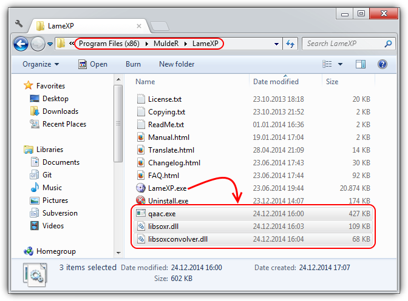
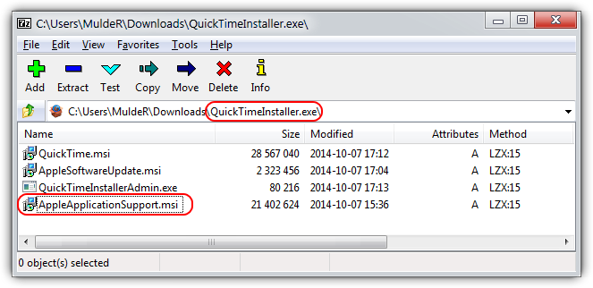
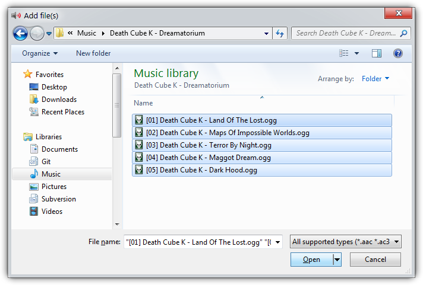
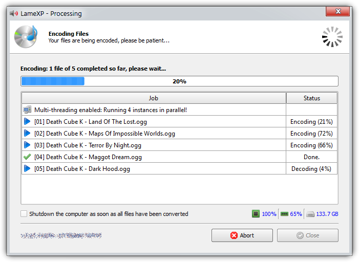

LameXP is a graphical user-interface (front-end) for various of audio encoders: It allows you to convert your audio files from one audio format to another one in the most simple way. Despite its name, LameXP is not only a front-end for the LAME MP3 encoder, but supports a wide range of output formats, including MP3, Ogg Vorbis, Opus, AAC/MP4, FLAC, AC-3 and Wave Audio. The number of supported input formats is even bigger! Furthermore LameXP not only runs on Windows XP, but also on Windows 7, 8 and 10 as well as many other operating systems.
Since all the encoders and decoders that are used by the LameXP software are already built-in (with one exception), you do not need to install any additional software, such as "Codecs", "Filters" or "Plug-ins", on your computer. Everything works "out of the box". You can even use LameXP as a "portable" application, i.e. you can run LameXP directly off your USB stick. Moreover, LameXP was designed for batch processing. This means that you can convert a huge number of audio files, e.g. a complete album or even your entire music collection, in just a single step. At the same time, LameXP is able to process several audio files concurrently, so it can take full advantage of modern multi-core processors! However, LameXP is not only optimized for speed, it also provides excellent sound quality by using the most sophisticated audio encoders currently available.
In addition to that, LameXP provides full support for meta information, including cover artwork. So when converting your audio files with LameXP, any existing meta information will be retained – to the highest possible extent. Of course, there also is an easy-to-use meta-tag editor for adding new meta information or managing the existing meta information. On top of it all, LameXP provides full Unicode support, for meta information as well as file names, thus problems with "intentional" character sets are avoided. Likewise, thanks to our translators, the user-interface of the LameXP software is available in many different languages, including English, German, Spanish and Chinese. Last but not least, LameXP supports a number of post-processing filters, including sample rate conversion, normalization (gain adjustment), tone adjustment as well as down-mixing.
Tier #1: LameXP is currently being developed on the following platforms:
Tier #2: The following platforms should work too, but aren't tested extensively:
The following legacy platforms are not actively supported any longer:
Â
Remarks: Windows XP has reached "end of life" on April 8th, 2014. This means that Microsoft has stopped all support for Windows XP. Thus no updates or bugfixes are made available to regular Windows XP users since that date, not even security fixes! Thus, all the security vulnerabilities that have been discovered after the deadline – and all the security vulnerabilities that are going to be discovered in the future – will persists forever! Consequently, using Windows XP has become a severe security risk, and the situation is only going to get worse. While LameXP will continue to support Windows XP (note that Service Pack 3 is required!) for the foreseeable future, we highly recommend everybody to update to a less antiquated system now. Windows XP support will be discontinued in a future version, when most users have migrated to a contemporary system.
Currently the following output formats (audio encoders) are supported by LameXP:
Currently the following input formats (audio decoders) are supported by LameXP:
The LameXP software was developed, from the scratch, by LoRd_MuldeR . Consequently, all copyrights on the LameXP software exclusively belong to LoRd_MuldeR. The right to use, modify and redistribute the LameXP software according to the license terms is granted to everybody. Please see below for license details! If you want to use the LameXP software in a way that is not covered by the license terms, e.g. if you want to include the LameXP software (or parts of it) in a proprietary software, written permission by LoRd_MuldeR is required.
More OpenSource projects by LoRd_MuldeR can be found at http://muldersoft.com/ and https://github.com/lordmulder. Please do not send e-mail to LoRd_MuldeR directly, if the problem or suggestion can be discussed on the support forums or on the issue tracker!
It has to be noticed that LameXP uses a number of third-party applications and libraries. The copyright on these third-party tools belongs to the individual authors. All third-party tools that are included in the official distribution packages of LameXP are distributed in accordance with the respective software license. For legal reasons, some of the third-party tools can not be redistributed along with LameXP and therefore need to be obtained separately. For more details on the third-party tools that are used by the LameXP software, please refer to the "Third-party software" tab in the "About" dialogue. Moreover, various people have contributed translations to the LameXP project. These translation are redistributed with permission of the respective contributor. For more information about our contributors, please refer to the "Contributors" tab in the "About" dialogue.
LameXP is free software, released under the terms of the GNU General Public License (GPL), version 2. The licenses for most software and other practical works are designed to take away your freedom to share and change the works. In contrast, the GPL is designed to guarantee your freedom to share and change all versions of the software. In other words, the GPL ensures that free software will remain free for all of its users. LameXP adds some additional terms in order to keep your computer safe from unwanted software. See the GNU General Public License for more details!
LameXP - Audio Encoder Front-End
Copyright (C) 2004-2014 LoRd_MuldeR <MuldeR2@GMX.de>
This program is free software; you can redistribute it and/or
modify it under the terms of the GNU General Public License
as published by the Free Software Foundation; either version 2
of the License, or (at your option) any later version.
This program is distributed in the hope that it will be useful,
but WITHOUT ANY WARRANTY; without even the implied warranty of
MERCHANTABILITY or FITNESS FOR A PARTICULAR PURPOSE. See the
GNU General Public License for more details.
You should have received a copy of the GNU General Public License
along with this program; if not, write to the Free Software
Foundation, Inc., 51 Franklin Street, Fifth Floor, Boston, MA 02110-1301, USA.Â
Addendum: When distributing binaries of the LameXP software, it is strictly forbidden to bundle the LameXP program files and/or the LameXP installation program with any kind of Adware, Spyware or PUP (potentially unwanted program), including, but not limited to, any downloaders, dialers, browser toolbars/extensions or restricted shareware/demo programs. It is, however, perfectly legitimate to bundle LameXP with other OpenSource programs, according to the OSI (Open Source Initiative). Finally, it is also legitimate to bundle LameXP with commercial software, as long as that software does not meet the criteria of Adware, Spyware or PUP. If you bundle the LameXP software with another software, you are required to make sure that the user is provided with an easy way to install and start the LameXP software separately from that other software.
Occasionally, it may happen that your anti-virus software mistakenly detects malware (virus, trojan horse, worm, etc.) while you are trying to run the LameXP application or the LameXP setup program. This is called a false positive and the file actually is not malware. Instead, this is an error (bug) in your particular anti-virus software! In case that you encounter this kind problem, we highly recommend using VirusTotal.com, Virscan.org or a similar web-service to check the file in question with multiple anti-virus engines. Unless the vast majority of the anti-virus engines detect malware, it can be assumed that the file is really harmless. However, please take care with heuristic scan results, such as "suspicious", "generic" or "packed". Those results are not confirmed malware detections – they are highly speculative and (almost certainly) can be ignored safely!
Defective anti-virus software is an ongoing annoyance! For example, anti-virus programs tend to suspect installers (or uninstallers) created with NSIS – which includes the LameXP setup program. But, of course, installers created with NSIS are perfectly legitimate. Thus, if your anti-virus program complains about the LameXP setup program, please ignore the nonsensical warning! Furthermore, it seems that some anti-virus programs accuse all "packed" executables of being malware. Nonetheless, using so-called "executable packers", e.g. UPX, is perfectly legitimate. Executable packers are commonly used by legitimate software, including numerous OpenSource projects – and so does LameXP. Thus, if your anti-virus program complains about the LameXP program file, because it has been "packed" by UPX, please ignore the nonsensical warning!
Last but not least: Always keep in mind that LameXP is free software, i.e. the source codes of LameXP are freely available to everybody! Thus, in case that you do not trust the provided binaries of LameXP, you may scrutinize the LameXP source codes and then build your own binaries…
An important fact to consider is, that, for the developer of a legitimate application, it is impossible to know why a specific anti-virus software may be misinterpreting his or her application as malware. That is because anti-virus programs generally are proprietary (ClosedSource) software – anti-virus companies don not publish their source codes or reveal their algorithms. Moreover, a zillion of different anti-virus programs exist nowadays. For these reasons, the application developer can not know what is going on "behind the scenes" in a particular anti-virus software. Consequently, any assumptions on the reasons that are causing the false positive would be nothing but pure speculation! Even worse, anti-virus software is updated frequently, so the reasons why the anti-virus software is misinterpreting the application as malware may change constantly!
At this point, it should be clear that implementing workarounds for defective anti-virus software is not a viable option for application developers. Instead, since the false positive is an error (bug) in the particular anti-virus software, it can be fixed only by the developer of the anti-virus software. Therefore, it is important that you, the (paying) customer of the anti-virus company, contact the support team of the anti-virus company and report the problem to them! Most anti-virus companies provide ways to report false positives in a standardized way, e.g. by means of a webform. However, it is not possible to list them all here. So please refer to the anti-virus developer's web-site. Also, when reporting false positives, please be self-confident: As a paying customer, you can demand that false positives get fixed in a timely manner. Otherwise, get your money back!
During the startup procedure, the LameXP software has to perform a number of file-system operations. This can take a few moments. However, the startup procedure should never take longer than approximately 5 seconds. Even on our test system – Windows 7 running on an ancient Intel Core2 processor with 4 GB of RAM – the startup procedure takes only about 1.5 seconds. And that is with the "real-time protection" of Microsoft Security Essentials (MSE) enabled! If we disable the MSE "real-time protection" feature, the startup procedure takes less than 0.5 seconds. Unfortunately, it has been brought to our attention, that some other anti-virus products may slow down the startup procedure significantly! Startup delays of up to 20 seconds have been reported by users, which corresponds to a slow down factor of 40× – caused by the anti-virus software!
Consequently, if you think that LameXP is starting up "slow" on your machine, we recommend to temporarily disable or uninstall your current anti-virus software. If your anti-virus software has a so-called "real-time protection" or "guard" feature, please be sure to deactivate that feature too! As soon as the anti-virus software has been neutralized and no longer affects legitimate applications, please try launching the LameXP software again. If it turns out that the startup procedure of LameXP has become significantly faster when the anti-virus software is not interfering, then you know one thing for sure: It is the anti-virus software that was causing the slow down! Please recognize that we can not fix this kind of problems. Instead, since the problem is actually a defect of the anti-virus software, please report the problem to the developer of the anti-virus software!
For reporting performance issues, please refer to anti-virus developer's web-site. Also, when reporting performance issues, please be self-confident: As a paying customer, you can demand that performance issues get fixed in a timely manner. Otherwise, get your money back!
The code of conduct regarding problems and annoyances related to so-called "anti-virus" software:
If your anti-virus software raises an "alarm" or "warning" while trying to launch the LameXP software or the LameXP setup program, please don't panic and take this with a grain of salt!
Unless the alleged "malware infection" has been confirmed by multiple different anti-virus engines, this almost certainly is a false positive and thus can be ignored safely 😊
In the extremely rare case that you actually have a confirmed malware infection, please try re-downloading the LameXP software from one of the official mirrors first, before you send us any reports!
If you encounter any false positives, please report these problems to the developer of the defective anti-virus software. We are not responsible for this problem and thus we can not fix it!
This chapter explains how to install the LameXP software on your computer. If LameXP has already been installed on your computer, you may skip this chapter.
Distribution packages of the LameXP software is provided in two different flavours: a self-running setup program and a ZIP package. For regular users, using the setup program is highly recommended!
In order to start the installation process, simply double-click on the downloaded LameXP setup program, e.g. LameXP.yyyy-mm-dd.Release-Static.Build-xxxx.exe.
Shortly after launching the setup program, an UAC (User Access Control) dialogue may appear. This is a standard Windows security feature, so don't worry! You have to choose "Yes", if you wish to continue the installation process.
Note: If you wonder why Windows suggests that the LameXP setup program originates from an "unknown publisher", despite the fact that it was downloaded from the official web-site, then please the explanation here!

Â
Now simply follow the instructions of the setup wizard, which will guide you through the installation process…
Note: Please do not change the "Destionation Folder", unless you know exactly what you are doing. The "Destionation Folder" cannot be changed, when upgrading an existing LameXP installation.

Â
Congratulation, LameXP has been installed successfully on your computer!
Note: If you keep the "Run LameXP …" option enabled and click on the "Finish" button, the LameXP software will be launched immediately.

If you decided for the ZIP package, you need to open the downloaded ZIP file, e.g. LameXP.yyyy-mm-dd.Release-Static.Build-xxxx.zip, in your favourite file archive software (we recommend using 7-Zip or WinRAR).

Â
This step may be slightly different, depending on what file archive software (e.g. 7-Zip or WinRAR) you are using. Select all files in the LameXP ZIP archive and extract them to a new/empty directory of your choice.
Note: It is very important that you have write-access to the chosen destination directory. So make sure that you choose a directory where the required access rights are granted!

Â
Congratulation, LameXP has been installed successfully on your computer! Now double-click on the LameXP.exe program file in order to launch the application!

First of all, it is important to note that there is no such thing as a separate "portable version" or "portable edition" of the LameXP software. Instead, all versions of the LameXP software always are "portable" – in the sense that the LameXP software is fully self-contained and thus no additional dependencies (libraries, frameworks, codecs or whatsoever) need to be installed on the computer separately. Or, in other words, the LameXP software is designed to work "out of the box". And this applies regardless of whether you choose the setup program or the ZIP package!
Nonetheless, the LameXP software supports a so-called "portable mode", which can be enabled or disabled at any time. By default, i.e. when the "portable mode" is not enabled, LameXP will store all of its configuration files in the current user's %APPDATA% directory. This is the correct way of storing user-specific configuration files on a modern multi-user operating system. Some users, however, may wish to use LameXP as a portable application. For example, they may wish to run the LameXP software directly off an USB flash drive – and do that on many different machines. In this particular situation, storing the configuration files in the same location where the LameXP program file resides (e.g. on the USB flash drive), instead of the local %APPDATA% directory, may come in handy! And that is exactly what LameXP does when the "portable mode" is enabled.
If you fully understand what the consequences of the "portable mode" are and still want to enable this mode, then simply rename the LameXP program file form LameXP.exe to LameXP-Portable.exe. You must exit LameXP, before you can rename the program file!
Note: By default, the LameXP installation directory is either C:\Program Files (x86)\MuldeR\LameXP or C:\Program Files\MuldeR\LameXP. However, this can be changed by the user during the setup process.

While the "portable mode" is in effect, it is the user's responsibility to ensure that LameXP will be provided with the proper access rights to save/load its configuration files to/from the LameXP program directory!
Note: The directories C:\Program Files (x86) and C:\Program Files usually are "protected" by the operating system, so LameXP probably will not be able to write into these directories.
If you wish to disable the "portable mode" again, then all you need to do is renaming the LameXP program file form LameXP-Portable.exe back to LameXP.exe. You must exit LameXP, before you can rename the program file!
Note: After the "portable mode" has been disabled, any configurations files that may have been created in the LameXP installation directory will no longer be recognized. Therefore, you can delete these files safely…
For legal reasons, the AAC (Advanced Audio Coding) encoder can not be included in the official LameXP distribution packages. Therefore, you need to download and install the AAC encoder manually. Don't worry, it's easy!
LameXP can use the Nero Digital AAC encoder as well as the QAAC (Apple iTunes/QuickTime) encoder. This chapter describes how to set up one of these AAC encoders for use with the LameXP software.
Note: If you are uncertain which AAC encoder to choose, please be aware that the QAAC encoder may produce slightly better sound quality, according to listening tests, while the Nero Digital encoder is less hassle to install.
First of all, you need to download the Nero AAC encoder from the official Nero Digital web-site. The download is free of charge:
Â
Simply scroll down, click the "I agree" button, and enter user@example.com when asked for an e-mail address. Finally, click the "Download" button, which initates the download of the required NeroAACCodec-1.5.1.zip file.
Note: Although the ZIP file is called NeroAACCodec-1.5.1.zip, it actually contains version 1.5.4.0 of the Nero AAC encoder software. Please check the included changelog.txt to verify this!

Â
Now open the downloaded ZIP file with your favourite file archive software (we recommend using 7-Zip or WinRAR) and navigate to the "win32" sub-directory.

Â
Finally, extract all the three files neroAacDec.exe, neroAacEnc.exe and neroAacTag.exe into the LameXP installation directory. That is the directory where your LameXP executable file, i.e. the LameXP.exe, is located.
Note: By default, the LameXP installation directory is either C:\Program Files (x86)\MuldeR\LameXP or C:\Program Files\MuldeR\LameXP. However, this can be changed by the user during the setup process.

Â
Once the required Nero AAC files have been put into the proper place, simply restart LameXP in order to enable the AAC encoding support!
Getting the Apple/QuickTime AAC encoder ready involves two separate steps: In the first place we will install the QAAC encoder, and in the second place we will install the Apple AAC encoder libraries.
First of all, you need to download the QAAC application, which provides a CLI font-end to the Apple/QuickTime AAC encoder. QAAC is provided as an Add-in for LameXP and is available from the following locations:
Â
Now open the downloaded ZIP file, e.g. LameXP.qaac-addin.yyyy-mm-dd.zip, with your favourite file archive software (we recommend using 7-Zip or WinRAR) to find the required QAAC program files.
Note: The LameXP software generally expects the latest version of the QAAC add-in; and the QAAC add-in is designed to work with the latest version of the LameXP software. Make sure your files are up-to-date!

Â
Please extract all the three files, the program qaac.exe plus its companion DLLs libsoxr.dll and libsoxconvolver.dll, into the LameXP installation directory. That is the directory where your LameXP executable file, i.e. the LameXP.exe, is located.
Note: By default, the LameXP installation directory is either C:\Program Files (x86)\MuldeR\LameXP or C:\Program Files\MuldeR\LameXP. However, this can be changed by the user during the setup process.

Next, the actual Apple/QuickTime AAC encoder libraries, which are part of the so-called "Apple Application Support" package, need to be installed on your computer. QAAC can not work without these libraries!
The required "Apple Application Support" package is included, for example, in the official setup packages of QuickTime or iTunes for Windows, which can be obtained from the Apple web-site free of charge:
Â
Since you usually do not want to install the complete QuickTime (or iTunes) software on your computer, please only download the QuickTime (or iTunes) setup package, but do not actually run the installer!
Instead, open the QuickTimer setup program, i.e. QuickTimeInstaller.exe, with your favourite file archive software (we recommend using 7-Zip or WinRAR) and extract the required AppleApplicationSupport.msi package.

Â
After the "Apple Application Support" setup package has been extracted, you can launch it by double-clicking on the AppleApplicationSupport.msi file. Then simply follow the installer's instructions.

Â
Once the QAAC encoder as well as the Apple AAC encoder libraries ("Apple Application Support") have been installed properly, simply restart LameXP in order to enable the AAC encoding support!
Note: You may run qaac.exe --check from the command prompt to ensure that QAAC has been set up correctly. Expected output is qaac 2.xx, CoreAudioToolbox x.x.x.x.
This tutorial will teach you, step by step, how to convert your audio files using the LameXP software. The tutorial assumes that LameXP is already installed on your computer.
First of all, you need to add all source files that you want to convert. So switch to the "Source Files" tab, just in case that tab is not active already, and then click the "Add File(s)" button.

Â
This will bring up a standard file selection dialogue. Now simply select the files that you want to add and click the "Open" button. You can repeat this step multiple times, e.g. to add files from different directories.

Â
All files you have added, so far, will show up in the list. You can click the "Remove" button to remove a single file from the list or "Clear" to remove them all. Click the "Show details" button to show details about a file.

Â
Did you know? Files can also be added via Drag & Drop. Just grab the files that you want to add in your Explorer window and drop them onto the LameXP main window (or onto the LameXP "dropbox" widget).
Next, you need to choose the output directory, i.e. the directory where the converted files will be saved. Switch to the "Output Directory" tab and choose the desired output directory from the directory tree view.
Note: There are several quick navigation buttons below, which will allow you to jump quickly to your personal "Home" folder, "Desktop" folder and "Music" folder, respectively.

Â
Sometimes you may wish to store the converted files in a new (sub-)folder. In this case, simply click the "Make New Folder" button, enter the desired folder name and hit the "OK" button.

Â
The new folder is going to be created inside the current directory and will be selected automatically. You can repeat this step multiple times in order to created nested sub-folders.

Â
Did you know? If you enable the "Save output files in the same directory where the input file is located" option, each output file will be saved to the same location where the corresponding source file resides.
Finally, you need to choose your compression settings. First, and most important, you must decide for an output audio format (encoder). Depending on your needs and preferences, you can choose between MP3, Ogg/Vorbis, Opus, AAC/MP4, FLAC and others.
Note: If you are uncertain which audio format to choose, then this article by Lifehacker is a good starting point. Also see the comparison of audio coding formats on Wikipedia. If still uncertain, just go with good old MP3 😉

Â
Once you have decided for an audio format, you need to choose a rate-control mode next. The available rate-control modes include VBR (quality-base variable bitrate), ABR (average bitrate) and CBR (constant bitrate). Not all modes are available for all audio formats.
Note: If you are uncertain which rate-control mode to chose, the guideline is that VBR mode should be preferred over ABR mode whenever possible. And CBR mode generally should be avoided. See also Wikipedia's article on variable bitrate encoding.

Â
Last but not least, you need to choose the desired target bitrate or quality-level. Put simply, this controls the "quality vs. file size" trade-off. You choose a target quality-level in case of VBR mode, and you choose a target (average) bitrate in case of ABR or CBR mode.
Note: If you are uncertain which bitrate or quality-level to choose, bare in mind that a higher bitrate (or a better quality level) results in better audio quality, but also produces larger files – and vice versa. "Level 2" or "192 kbps" is a typical choice for MP3.

Â
Did you know? You can click on the "Reset" link at any time in order to reset all available settings for all available encoders to their factory defaults.
When everything has been set up properly, the time has come to actually start the encoding process. So simply click the "Encode Now" button in order to get going!

Â
This will bring up the "Processing" dialogue. LameXP will now convert all your audio files on the list. Depending on the number of audio files and depending on the performance of your system, this may take several minutes, so please be patient 😉
Note: In order to leverage the power "multi-core" processors and thus massively speed-up the encoding process, LameXP will run multiple encoding jobs in parallel – provided that your system has multiple processor cores and that there are enough encoding jobs left in the queue.

Â
The "Processing" dialogue is going to turn green, as soon as all encoding jobs have finished successfully. If anything went wrong, e.g. if one of the encoding jobs failed for some reason, it will turn red instead.

Â
Did you know? You can double-click on a completed (or failed) job in the list, in order to bring up a dialogue with all details about the specific job. This is especially useful, if something went wrong.
Before you report any problems that you may have encountered with the LameXP software, please make sure that the problem can be reproduced with the latest release version of LameXP!
The latest official release of the LameXP software can be obtained from one of the following official download mirrors:
Â
It is highly recommended to download LameXP only from one of the official mirrors listed above. We are not responsible for the integrity and trustworthiness of LameXP downloads you may have received from other locations!
If you want to report any problems that you have encountered with the LameXP software, please provide as much details as possible. Diagnostic output can be especially helpful here!
If a certain encoding job has failed, you can double-click the failed job in the LameXP "Processing" dialogue, which will bring up a detailed log for that job. Use the "Copy to Clipboard" button to save that information.
You can launch the LameXP application with the additional command-line parameter --console in order to enable the LameXP debug console, which provides many information on what is going on "behind the scenes".
The environment variable MUTILS_LOGFILE may be used to specify a log file that will be created by LameXP. The information that are saved to the log file are the same as those available from the debug console.
Â
Note: We highly recommend using a web-service like Gist, Pastie or Pastebin in order to share your diagnostic information. Please avoid posting long log files directly on the forums!
The recommended way to submit bug reports or feature requests to the LameXP developers is using the issue tracking system at our GitHub project site:
Â
Note: In order to use the issue tracking system, you need to log in with your GitHub account. Creating a GitHub account is easy and completely free of charge, simply click here!
If you want to discuss the development of the LameXP software, help other users or receive help from other users, please use the LameXP thread at Doom9's Forum:
Â
Note: Due to the massive amount of spam attacks, Doom9 has established strict anti-spam measures. Therefore, it takes a few days until your account will be approved.
While LameXP originally was written in Delphi/Pascal, the current version 4 series of the software has been re-written in the C++ programming language. LameXP v4 uses the Qt cross-platform application framework and provides full Unicode support. Furthermore, LameXP is tightly coupled with the MUtilities library, a vast collection of "utility" routines and classes to extend the Qt framework. Build files are currently provided for Microsoft Visual Studio only. Linux support is currently provided via Wine; a native Linux port of LameXP is planned for a future version.
The source code of the LameXP software is managed using the Git version control system. The Git repository can be cloned from one of the official Git mirrors:
git clone git://git.code.sf.net/p/lamexp/code LameXP (Browse)
git clone https://github.com/lordmulder/LameXP.git LameXP (Browse)
git clone https://git01.codeplex.com/lamexp LameXP (Browse)
git clone https://bitbucket.org/lord_mulder/lamexp.git LameXP (Browse)
git clone git://git.assembla.com/lamexp.git LameXP (Browse)
git clone git://gitorious.org/lamexp/lamexp.git LameXP (Browse)
git clone git://repo.or.cz/LameXP.git LameXP (Browse)
Â
The source code of the MUtilities library is managed using the Git version control system. The Git repository can be cloned from one of the official Git mirrors:
git clone git://git.code.sf.net/p/mutilities/code MUtilities (Browse)
git clone https://github.com/lordmulder/MUtilities.git MUtilities (Browse)
git clone https://git01.codeplex.com/mutilities MUtilities (Browse)
git clone https://bitbucket.org/lord_mulder/mutilities.git MUtilities (Browse)
git clone git://git.assembla.com/mutilities.git MUtilities (Browse)
git clone git://gitorious.org/mutilities/mutilities.git MUtilities (Browse)
git clone git://repo.or.cz/MUtilities.git MUtilities (Browse)
Â
Remarks: In case you are new to Git or want to extend your knowledge, have a look at the Pro Git book by Scott Chacon! For Windows users, we highly recommend using MSYS Git in conjunction with the superb Tortoise Git front-end.
LameXP is currently being developed and built using the following development tools and libraries:
Visual Studio 2013 Update-4, running on Windows 7 with Service Pack 1
Qt libraries 4.8.6 for Windows (pre-compiled Qt libraries for Visual Studio 2013 can be found here)
Windows Platform SDK v7.1A, included with Visual Studio 2013 or Visual Studio 2012
The minimum supported build platform is Windows 7 (x86 and x64)
Â
In order to create LameXP release packages, using the included deployment scripts, you need the following additional tools:
7-Zip – file archiver with a high compression ratio
NSIS – Nullsoft Scriptable Install System (Unicode version recommended!)
UPX – the Ultimate Packer for eXecutables
Pandoc – the Universal Document Converter
GnuPG – the GNU Privacy Guard v1.4.x
In order to create a "fully static" build of LameXP, i.e. a build that does not depend on any "external" DLL files (except for the obligatory operating system DLL's that you cannot get around), you'll need to compile Qt as "static" libraries. The official Qt web-site does provide pre-compiled Qt libraries. However, they only provide DLL versions, they do not provide "static" libraries. Consequently, you need to build the required "static" Qt libraries yourself. The following simple instructions should make it easy to build Qt from the sources and as "static" libraries:
Make sure Visual Studio 2013 with Update-4 (or later) is installed
Make sure Strawberry Perl for Windows and Python 2.7 are installed
Download and extract the Qt 4.8.x source code package (e.g. to C:\QtSources\4.8.x)
Edit the file mkspecs\win32-msvc2010\qmake.conf from your Qt Sources directory as follows:
Old: QMAKE_CFLAGS_RELEASE = -O2 -MDNew: QMAKE_CFLAGS_RELEASE = -O2 -MT <more optimization flags here>Old: QMAKE_CFLAGS_RELEASE_WITH_DEBUGINFO += -O2 -MD -ZiNew: QMAKE_CFLAGS_RELEASE_WITH_DEBUGINFO += -O2 -MT -Zi <more optimization flags here>Open a new command window (cmd.exe) – use this very same console for all upcoming steps!
Add Strawberry Perl to your PATH (e.g. set PATH=C:\strawberry\perl\bin;%PATH%)
Add Python 2.7 to your PATH (e.g. set PATH=C:\python27;%PATH%)
Run vcvarsall.bat x86 form your Visual C++ install directory - within the same console!
Change the current directory to the Qt Sources path (e.g. C:\QtSources\4.8.x)
Run configure.exe -release -static -ltcg -qt-zlib -qt-libpng -qt-libjpeg -qt-libtiff -qt-libmng
-platform win32-msvc2012 tooNow the makefiles should have been generated, so simply enter nmake /B and be patient - voilà !
The build process is going to take good amount of time. Once it is done, make sure you got all needed libs:
lib\qtmain.liblib\QtCore.liblib\QtGui.liblib\QtSvg.liblib\QtXml.libplugins\imageformats\qico.libplugins\imageformats\qsvg.libplugins\imageformats\qtga.libPut all the static *.lib files into the Prerequisites\qt4_static\lib directory
ImageFormat plugins go to Prerequisites\qt4_static\plugins\imageformats
Congratulations, you should now be prepared to build the Release_Static configuration of LameXP 😊
Â
Note: Static libraries only work with the exactly same compiler (version) they were built with!
This section tries to answer some of the most frequently asked questions. So if you have a question, please have a look at this section, before you send the question to us 😉
A: Nope. LameXP is free software. You may use it free of charge and for any purpose, including commercial purposes, according to the terms of the GNU General Public License. The developers of LameXP will never ask you to pay for using the LameXP software. Also, several free download mirrors are provided. However, it was brought to our attention, that there are some third-party web-sites which offer payed downloads of LameXP, or provide LameXP downloads that have been infected with Adware – we do not cooperate with any of these web-sites! Therefore, please do not pay money for using or obtaining the LameXP software; the developers of LameXP will not benefit from this money. If anybody tries to make you pay money for for using or obtaining the LameXP software, this is fraud and you should not respond to this kind of offer!
A: Yes. LameXP is free software. You may modify and/or redistribute it freely, according to the terms of the GNU General Public License. However, be aware that it is strictly forbidden to bundle the LameXP program files and/or the LameXP installation program with any kind of Adware, Spyware or PUP (potentially unwanted program). Usually, no additional permission will be needed. If, however, you wish to redistribute the LameXP software in a way that does not comply with the license terms, a written permission by the author of the LameXP software is required!
A: LameXP is a non-profit project. The authors of the LameXP software do not accept any donations, in terms of money. If you wish to support the LameXP project, then you may do so by contributing translations, by improving the LameXP program code or by providing web-servers.
A: Originally, the LameXP software was created as a very simple GUI front-end to the LAME MP3 command-line encoder. The original version of this software, released some time in 2004, did not support any encoders except for LAME, it did not support any input formats except for Wave Audio, it did not support any audio filters, it did not support multi-threading, it did not support Unicode file names and it did not handle meta information. Because the software was a front-end to LAME, because it was running on the Microsoft Windows operating system and because, back at that time, Windows XP was the most popular Windows version (by far), I decided to call the software "LAME front-end for Windows XP" – or, in short, LameXP. Note the most creative name, I have to admit. Anyway, more and more features have been added to the LameXP software over the years. Also, the software has been re-written from the scratch at least two times. Nonetheless, the original name of the software has been retained. This is partly because people have become used to that name, and partly because I simply haven't been able to come up with a better name…
A: They are! The official LameXP binaries are digitally signed by PGP signatures, created using the GnuPG software. However, the LameXP binaries are not signed in a way that the Microsoft Windows operating system recognizes. Please note that Microsoft Windows does not currently recognize PGP (GnuPG) signatures. For this reason, Microsoft Windows may show a warning when trying to launch or install the LameXP software. Microsoft Windows will also complain that the LameXP program files originate from an "unknown publisher", despite they are signed.
So why are the LameXP binaries not signed in the way Microsoft Windows recognizes? This is because Microsoft Windows uses a hierarchical trust model: Windows trusts into a number of Certificate Authorities (CA), which are built into the operating system. These CA's can issue signing certificates, e.g., to software companies. The software company can then use its signing certificate to sign their binaries. Finally, Windows will verify the signature by using the corresponding signing certificate. And the signing certificate is verified using the built-in CA certificate. However, this system is flawed: First of all, CA's do not create signing certificates for free. Also these certificates are only valid for a limited period of time. LameXP is a non-profit project and therefore we can not afford buying new certificates in regular intervals. Secondly, and even more important, the whole system depends on the trustworthiness of the CA's. But, as we all (should) know by now, these CA's can be forced to create "bogus" certificates, e.g. by intelligence services or other governmental organizations. Please also see this blog post by "fefe" for an in-depth explanation.
If you want to verify the LameXP signatures yourself, then you may do so by using the Gpg4win software package, an easy-to-use distribution of the GnuPG software for Microsoft Windows. Of course you will also require the public key of the LameXP developers. The finperprint of the official GnuPG signing key is 3265784425BF2B394F67CE07106A413D6CF3FA22 and the corresponding public key block is provided in the following. If you are not familiar with the GnuPG software yet, please have a look at the Gpg4win compendium or the GnuPG manual.
LameXP public PGP (GnuPG) key:
-----BEGIN PGP PUBLIC KEY BLOCK-----
Version: GnuPG v2.0.21 (MingW32)
mQGiBEp0LDgRBACbZhtVHbb4tWlJCCxQ3eH9TQ3zUYrI2UHN94Yk8MJGEO1Fxigg
smUAeGRmHKpH24VCB/MaHef83fd3bu2yHSf8xgWe90hZR1pLLfmtxqN1SZu/YlJx
y4LOcxEwSc3P09cDL112fEFKs36d7OPYR6DXk75hWRwsnd0snJEnDHMVKwCgqCsn
9y5rxTeH32sNytkdMMijkD0D/RrNZiCr/uQcT695oLsYkemNQzbN+hd5bmkkXnRi
H27kHeeY1G1zLLFfTk7yKm7UZrTpMYxCXS80ORs9RF9rL8bnzzSiBAIHEz4uc5SD
oH7K3Y526SZ4m4GOLnlVTisd9FXpm0YHB/MXMRrNLZbSzveS3pOEmRny0yeI13cU
y8tqA/4xjW2DPlwB7lIUOcPyXa9pmAkLApCYF4CwUwKw4df6s+4txWkvuD0cJlli
nPK7B7SrMv5c2Eg2UQWpF0WN+s8IqX3eoJ1CI+oBVZVWZMhC+Vojz8K0tIkHWZh7
sy/gUk6XApTN8Ce/xbuMgDhfqxUXzkGzpvR9FJ0Y0R7kNgReUbQzTG9SZF9NdWxk
ZVIgKGh0dHA6Ly9tdWxkZXIuYXQuZ2cvKSA8bXVsZGVyMkBnbXguZGU+iGAEExEC
ACAFAkp0LDgCGwMGCwkIBwMCBBUCCAMEFgIDAQIeAQIXgAAKCRAQakE9bPP6IqKr
AJ4541p84C0jD/MdL1akNsUtAQOBrwCcDAumPHDCj7wfmmeY/KN+jOmrp8G5BA0E
SnQsOBAQAIy8TJYBYPxVtq8ENPs5qpLv+g3RRc/0TLaimaZGGdbsvANCswgNlxrK
spAb2IFC8Y85jl7PusdXhC89q1gP5cfb6WLzFggRZt6UEE3dJ+aBuKSu+k+y1n/v
R8oHpptIq3leonG5dXte5ZAYg+ID7DZz2QWgu4oWeDnUl945DLSCGj4vuT5sY/wi
zNv6PV2E0Bl+HIwkzlwHa9vYRPx84FL9eFM7llJdH5TYQZ+VkdqKIfAUWwXsDeqD
7YviIWLBbDxCtgfVB7sGYRZltMO9Nir7igO8SxOawkuBtLzU2ZbevBOSZmxami33
E2oAGWtcXGhKHMy7vPOQKfShcf2N0QMhNDSR54nxuu3/BW9diwYubJCkbkP/gv7g
GU/0eVWp19LeQN92zcmRN0JcJtu71T6Pcel9ZttEy/xyNyOrqhMP7vDd2sExwsYZ
VUqlOg7hA++TMCmNcxLQgWlb7tJxhNr4pBkJiX6Guu8/3fhQ0If99ZlpeCpmMJFN
kvhgFMWtCVPk5u1i/lwXsSoRcRXIfbRAcBqVEe5mgcyBBQZCoK2kQ8qt7Zol6/Lu
9GsY/ag4elArck1EtlK0fxpVUsEskTR2Yw7hY/upPGfI22Wzzfg6WlwaYysyONfF
ecoKS+ZaXVQ9BDAtRDKSD2yXkYDngJLDcbOTOPLxfDP/dKthqzkXAAMFD/0W/s64
tsIju1IGE8uQt1fIZECV8M8HJeVatNEVJyPDrS/WIO0vqedxhod6qpF1UwPBG1gw
WKe7nPhFoBzDayK92umEXUng0nQYmFUJWk7PXI751R1VFVgrbVw+LM2zy0/WRClh
2qUWv+q6JuK56NooPx3sgAE4uuGoiRi8qt8eNuu6FP90LUKo0t9mMEyVAHJdQbcm
tMFFU5K3+UehVYgosfplmLt5wpAs5GjqQSmeXA1DhvXNlPBBVn/tTSqGTw5+boqv
lfwHgLJOqae3GH+HZ1ega2/qb5PFVZRpV9PrRh38IRe0ZM0Y0yQtlhUPywksD8UM
KttadTHcBW4O/EZCEAOg69fc52mDs5GykJoXCOLsEc3/x2YJk8hvID3gR+qX/wxX
WDTVY0KL1IC+xo4Y3BxKXHd8EPhOyR52mHm6BvVE/bbMeQjTF0pPjqIL1iM23crA
Z9oYAtzYTOYyjtzx7SzY0SU+0jB7k7akr70vlbNR+Hk5iAR43MFoE5LyQpsmaUob
W8WwGwTUabrs0KXXNC6OotfZqylL+cgn+STDdmGLiW0rw7Yv6CxR+ZW77yiWHYam
TXY0hzq4U/9NnWwgCJErG5qausG8YidfDHenKIwZfc36d/bm6FSv5XGxShM7J4aO
uhZnmF9iIfovqAe60soJ+uH6UOnxEB6LHZNhiohJBBgRAgAJBQJKdCw4AhsMAAoJ
EBBqQT1s8/oi0RsAniNAOQRb8roflIOXVmeW3uB50RVtAJwLS5O19VD1W0HxjNZ6
sE7XdEZn+w==
=WDwE
-----END PGP PUBLIC KEY BLOCK-----A: LameXP does not connect to any web-server, except for the "automatic updates" feature. Of course, in order to check for new updates, LameXP unavoidably has to communicate with our update servers. However, in no event LameXP will search for updates without your consent. Also, LameXP will not send any personal information to the update server. Instead of uploading your information, e.g. your current program version, to the web-server, LameXP will download the update information from the update server and compare it to your installed version locally. Furthermore, all information and program files downloaded from the update servers are protected by PGP (GnuPG) signatures, in order to assure the authenticity and integrity of these files. Files with missing/invalid signature are going to be rejected, so (spoofing) attacks are prevented.
Note: Before LameXP actually tries to download information from our update servers, it will check your internet connection first. Only checking whether the update server is reachable does not suffice here. In case that the update server does not respond, this could mean that our servers are currently experiencing problems, but it could also mean that your Internet connection is failing. In order to distinguish these cases, LameXP will validate the Internet connection prior to connecting to the update server. For this purpose, LameXP contains a rather long list of "known" hosts, taken mostly from Alexa's Top 500 list. In order to validate the Internet connection, LameXP will pick a random host from the list and check whether that host can be reached. This process will be repeated, until a certain minimum number of "known" hosts have been reached successfully.
Â
Â
EOF